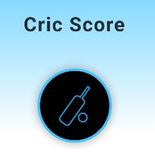
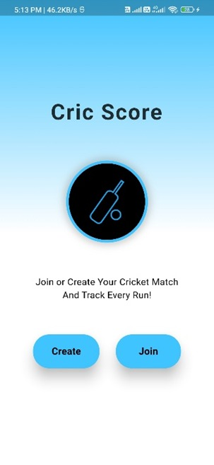
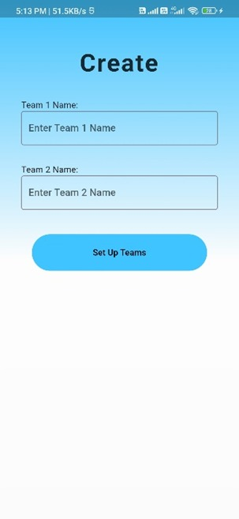
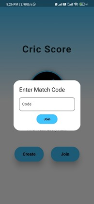
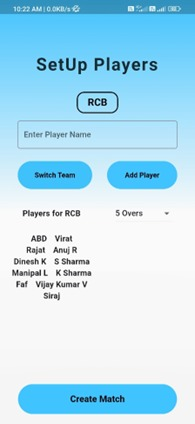
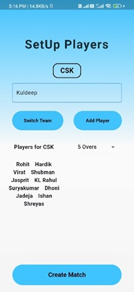
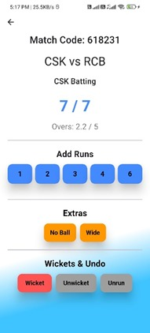

Tech Stack
- Flutter web interface
- Firebase hosting and database workflows
- Real-time match scoring logic
- Responsive app screens for local users
A real-time cricket scoring web application built for local matches, team creation, player lists, scoreboards, and quick match sharing through Firebase-backed workflows.

CricScore Sport helps local cricket organizers manage match scoring with a digital workflow. It focuses on quick setup, readable score updates, player organization, and a simple experience for users who need live match information without complex tooling.
Screens from the CricScore Sport local cricket app flow.





